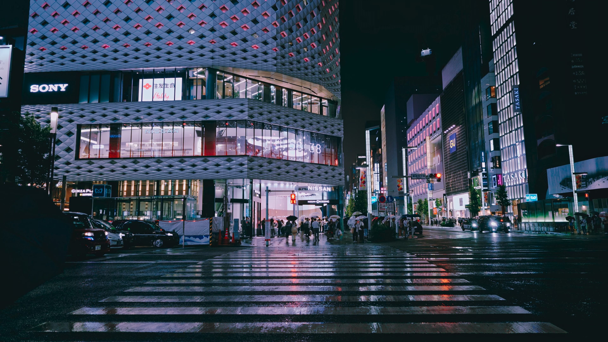

THE DIRECTOR'S ROOM
导演台
让故事，一帧帧发生。雨
雨停之前短片
已保存到本机 · 3 个场景 · 6 个分镜

SCENE 01 / SHOT 01预览 · 1080P
BEFORE THE RAIN ENDS一场雨，让城市慢了下来。
16 : 900:0000:39
分镜序列 6 镜 / 39 秒
时间线 39 秒 / 24 FPS
拖动播放进度预览00:0000:1000:2000:3000:39
画面
环境音
雨声 · 城市的呼吸
YOUR STORY'S BUILDING BLOCKS
素材库
故事里的人、地点与物件。没有匹配的素材
MAKE THE IMAGINED, REAL
生成工作台
把脑海中的画面，带到眼前。创作记录 3 个作品
本次工作空间A PLACE FOR INSPIRATION
我的收藏
留住让你停下来的那一帧。MOODBOARD / 雨停之前
雨夜，霓虹，未说出口的话。
关于这部短片的视觉灵感。
没有匹配的收藏
EVERY FRAME, IN GOOD HANDS
资产库
你的作品，有迹可循。本机作品库 已同步
下载 / 拾帧 / 作品
6个作品
1.28 GB本机存储
可用空间236 GB
今天 10 月 28 日
所有文件均为演示样例没有匹配的作品
MORE CLARITY, MORE CREATIVITY
用量与余额
每一次创作，都心中有数。创作消费 ¥48.60
按已完成任务统计
生成作品 36个
视频 18 · 图片 12 · 语音 6
平均每件 ¥1.35
把预算用在好故事上
创作趋势
每日消费 / 元12840
10 月 15 日10 月 21 日10 月 28 日
供应商余额
K
可灵视频生成
¥ 128.50S
Seedance视频 · 图像
¥ 86.00D
DeepSeek文字创作
¥ 32.80示例数据，不关联真实账户
最近账单
| 创作内容 | 类型 | 型号 | 时间 | 费用 | 状态 |
|---|---|---|---|---|---|
| 雨停之前 · 雨中的街口 | 视频 | 可灵 2.6 | 今天 14:32 | ¥ 2.40 | 已完成 |
| 林晚 · 角色定妆 | 图片 | Seedream 4.0 | 今天 14:18 | ¥ 0.20 | 已完成 |
| 雨停之前 · 分镜脚本 | 文字 | DeepSeek V3 | 今天 13:56 | ¥ 0.08 | 已完成 |
MAKE YOURSELF AT HOME
设置
适合你的，才是好工具。外观与体验
为专注的创作，留一个舒适的空间。
减少动态效果
降低界面切换与悬停动效
供应商
演示连接此预览不收集密钥。
K
可灵
已连接视频生成
S
Seedance
已连接视频 · 图像
创作偏好
默认画面比例
应用到新建的镜头
自动保存作品
生成完成后保留本机副本
本机存储
作品位置
下载 / 拾帧 / 作品
本地优先。创作与灵感，由你掌握。